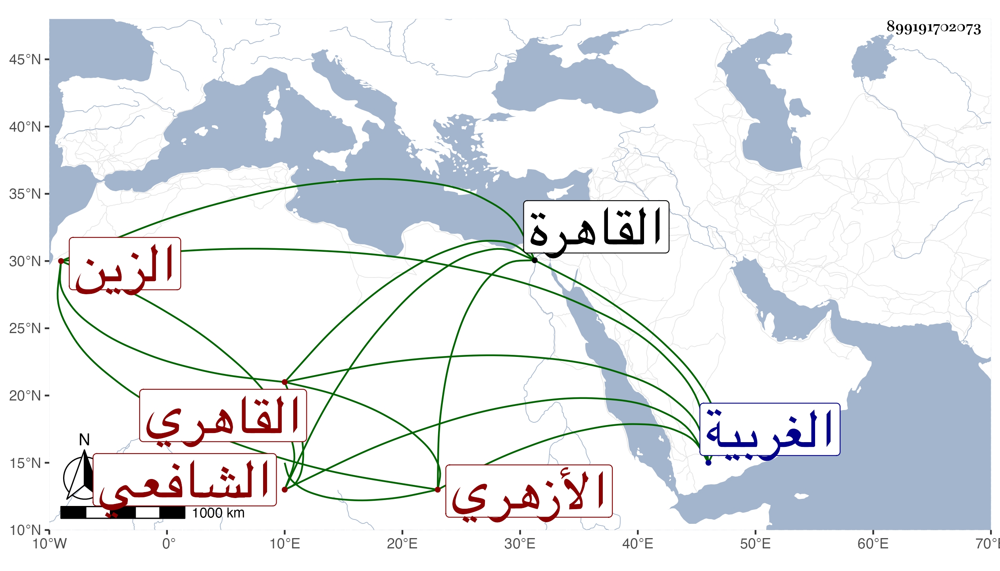

0902Sakhawi.DawLamic.ITO20230111-ara1.EIS1600.899191702073
Biography ID: 899191702073
665
عبد الغني بن محمد بن عمر بن عبد الله الزين الاشليمي ثم القاهري الأزهري الشافعي . ولد تقريبا سنة عشرين وثمانمائة باشليم من الغربية وقرأ بها بعض القرآن واشتغل وانتقل مع أخيه إلى القاهرة فأكمله بها عند الفقيه حمزة إمام مقام الشافعي وصلى به تاما بالمنصورية ثم حفظ المنهاج الفرعي والأصلى وألفية النحو ، وعرض على جماعة واشتغل في الفقه على الشرف السبكي والقاياتي والونائي وجماعة وفي النحو على الشمني وفي الفرائض على ابن المجدي وفي العروض على الشهاب الابشيطي ولازمهما حتى أذن له كل منهما ، وعمل أرجوزة في الفرائض في حياتهما لم تكمل وسمع على الزين الزركشي وشيخنا وطائفة وتنزل في صوفية سعيد السعداء وغيرها وهو فاضل خير فقير قانع متعفف كتبت عنه قديما مما خاطب به شيخنا أيام محنته ولصقا بمحل جلوسه بالمنكوتمرية قوله :
| لن يبلغ الاعداء فيك مرادهم | كلا ولن يصلوا إليك بمكرهم |
| فلك البشارة بالولاء عليهم | فالله يجعل كيدهم في نحرهم |
وفي معجمه وغيره من نظمه الكثير وبعض ذلك مما امتدحني به .
